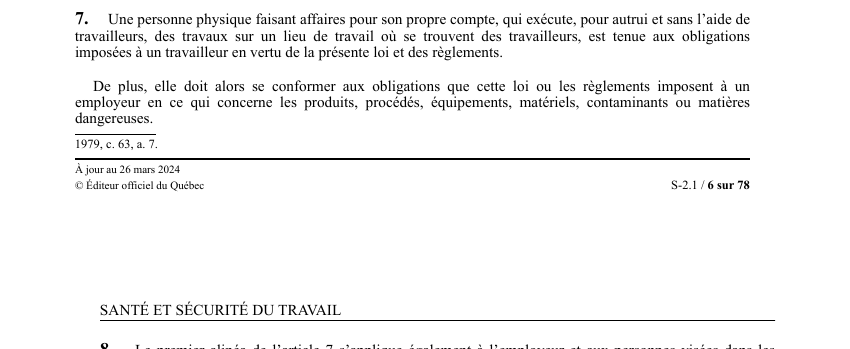

art-7-LSST : remplacement du travailleur en refus
Un article du wiki ⚖️ Recueil législatif
Texte de l’article (transcription)
Une personne physique faisant affaires pour son propre compte, qui exécute, pour autrui et sans l'aide de travailleurs, des travaux sur un lieu de travail où se trouvent des travailleurs, est tenue aux obligations imposées à un travailleur en vertu de la présente loi et des règlements. Il s'agit d'une obligation.
🌐 LegisQuébec · 📄 PDF officiel (page 6)
Texte officiel : capture du PDF

Toucher l'image pour l'agrandir🔗 Ouvrir a cette page : LSST.pdf : page 6 · texte a jour au 26 mars 2024
📚 Source légale : 1979, c. 63, a. 7. · LégisQuébec
Voir aussi
- art. 5.1 : application au télétravail · champ d'application : sous réserve de toute disposition inconciliable, notamment eu égard au lieu de travail, les dispositions de la loi s'appliquent au travailleur qui exécute du télétravail et à son employeur.
- art. 6 : loi applicable au gouvernement · obligation : la loi lie le gouvernement, ses ministères et les organismes mandataires de l'État ; une personne physique faisant affaires pour son propre compte, qui exécute des travaux sur un lieu de travail où se trouvent des travailleurs, est tenue aux obligations imposées à un travailleur.
- art. 8 : assimilation aux travailleurs · champ d'application : l'article 7 s'applique également à l'employeur et aux personnes visées dans les paragraphes 1° et 2° de la définition du mot «travailleur» à l'article 1 qui exécutent un travail sur un lieu de travail.
- art. 8.1 : prévalence sur véhicules hors route · champ d'application : la présente loi et ses règlements d'application prévalent sur toute disposition incompatible de la Loi sur les véhicules hors route et de ses règlements d'application.
- ↑ Loi : LSST
Pages qui pointent ici (5)
- art-203-LMRSST : modifie l'art. 161.0.7 LSST Recueil législatif
- art-5.1-LSST : application au télétravail Recueil législatif
- art-6-LSST : loi applicable au gouvernement Recueil législatif
- art-8-LSST : assimilation aux travailleurs Recueil législatif
- art-8.1-LSST : prévalence sur véhicules hors route Recueil législatif